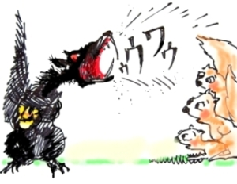

This page has usage examples for the following words:
alveolar pyorrhea 歯槽膿漏 しそうのうろう
cold sore 口内の痛いブツブツ こうないのいたいブツブツ
little limps on the side of tongue 舌の縁のブツブツ したのふちのブツブツ
mucosa, mucous membrane 粘膜 ねんまく
stomatitis 口内炎 こうないえん
thrush 口内外のただれ（幼児） こうないがいのただれ（ようじ）
vitamin deficiency ビタミン不足 ビタミンぶそく

I have noticed swelling on my lip this morning.
朝、起きると、唇がぷくっと腫れていました。
あさ、おきると、くちびるがぷくっとはれていました。
I have cold sores in my mouth. Sour food irritates them.
口の中に白いブツブツのものが出来ていて、すっぱいものを食べるとしみます。
くちのなかにしろいブツブツのものができていて、すっぱいものをたべるとしみます。
Do I eat too much spicy food?
刺激の強い食物を取り過ぎたのでしょうか。
しげきのつよいたべものを とりすぎたのでしょうか。
Does vitamin C deficiency cause it, or is there another deficiency?
それとも、ビタミンＣか何かが不足しているんでしょうか？
それとも、ビタミンＣかなにかがふそくしているんでしょうか？
My lips are rough and sometimes peel….
唇が荒れて、たまに唇の皮がむけます。
くちびるがあれて、たまにくちびるのかわがむけます。
I'd like to have smooth lips….
いつもつるつるとした、なめらかな唇になりたいのですが・・・
いつも つるつるとした、なめらかなくちびるになりたいのですが・・・

A conversation between a patient and a doctor about stomatitis
Patient:
I have noticed swelling on my lip this morning and it was itchy. Because it is difficult to apply medicine on wounds on the lip or inside the mouth, we usually leave them without any treatment. I remember that I applied honey to any wound in my childhood.
Doctor:
朝起きると、唇がぷくっと腫れていて、かゆみがありました。唇や口の中の傷は、薬を塗ることが難しいので、そのままに放置することになります。子供の頃は蜂蜜を塗っていたのを思い出します。
Stomatitis is defined as inflammation of the mucous membrane inside the mouth (including lips and tongue). We all have experienced the condition when lack of sleep or overwork lasts for a while. Stomatitis is caused by fungi (a type of mold), bacteria and virus. The former two cause thrush in infants and the virus causes cold sore in adults. Fungi, bacteria and virus, which are known parasites residing inside the mouth, cause the above-mentioned inflammation when the host (humans) loses physical strength. Stomatitis is also caused by poorly fitted oral appliances such as dentures and by iron and vitamin B deficiencies due to poor diet or malnutrition. It appears as one of the symptoms of systemic diseases such as diabetes mellitus. Thus, treatment consists of finding the causes and taking appropriate measures. Honey is helpful as it protects the surface of wounds.
口内 (唇や舌も含む) の粘膜の炎症が口内炎ですが、睡眠不足や過労が続いた後にどなたも経験なさると思います。真菌 ( かびの一種 ) や細菌で起こる他、ウィルスも原因となります。前者は、幼児の口の内外のただれ (thrush )。後者は、成人の口内の痛い点々 (cold sore)でよく知られています。共に、普段から口内に寄生している菌やウィルスで、寄生主（人間）の体力が低下すると上記のような炎症を引き起こします。口内炎は、又、義歯など口にはめる器具が良く合わない場合、偏った食生活や栄養失調のための鉄分またはビタミンＢ欠乏,更には、糖尿病などの全身病の一症状としてもおきます。従って、原因を突き止め、それぞれに適切な治療法を選択する必要があります。蜂蜜は傷の表面を保護する意味で役に立ちます。
My two cents 一言おせっかい
All work and no play makes Jack a dull boy.
何事につけ、バランスが大切ですね。
[ko01]
| © 1995-2013 NACOS International Institute. All Rights Reserved. |